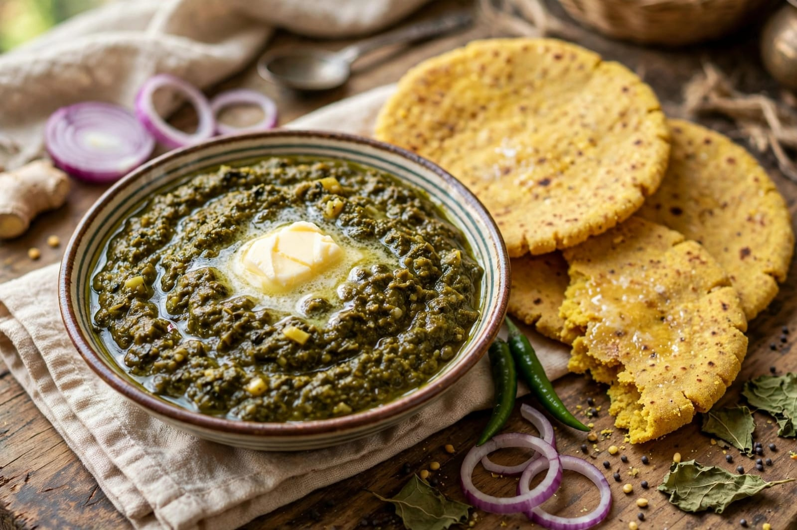
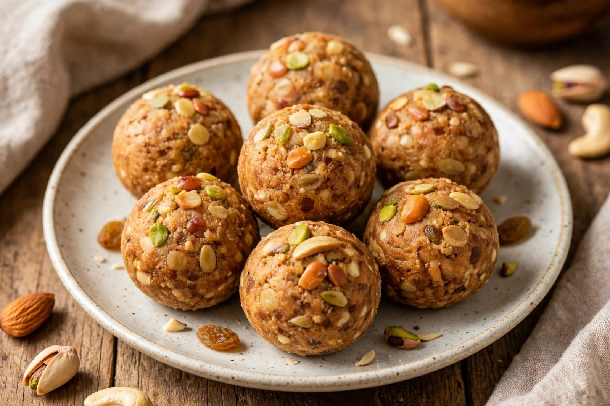

About Baisakhi
Baisakhi is an important festival celebrated mainly in Punjab and North India. It is also known as Vaisakhi. Baisakhi is celebrated every year in the month of April. It is mainly a harvest festival. Farmers celebrate the festival after harvesting their crops. The festival marks the beginning of a new agricultural year. Baisakhi is a festival of happiness and thanksgiving. People thank God for a good harvest. New crops are harvested during this season. Wheat is one of the important crops associated with Baisakhi. Farmers wear traditional clothes on this special day. People visit temples and gurdwaras. Special prayers are offered during the festival. The Golden Temple in Amritsar is an important place for celebrations. Many devotees visit gurdwaras on Baisakhi. The festival has great religious importance for Sikhs. Baisakhi is also connected with the history of Sikhism. In 1699, Guru Gobind Singh established the Khalsa. This event took place at Anandpur Sahib. The formation of the Khalsa is remembered on Baisakhi. Sikhs celebrate the day with devotion and respect. Processions are organized in many places. These processions are called Nagar Kirtan. People sing devotional songs during the processions. Traditional music is played during the celebrations. Bhangra is a popular dance performed during Baisakhi. Giddha is another traditional dance associated with Punjab. People dance with great enthusiasm. Colorful traditional clothes make the festival attractive. Men often wear traditional Punjabi dress. Women wear colorful Punjabi dresses. Homes and streets may be decorated for the festival. Community meals are organized in gurdwaras. These meals are known as langar. Everyone can participate in the langar. People share food and happiness with others. Baisakhi brings families and communities together. It spreads joy and gratitude.
Baisakhi is celebrated with great enthusiasm in Punjab. Farmers consider it an important day of the year. They celebrate the successful harvest of their crops. The festival provides an opportunity to thank nature. People express gratitude for food and prosperity. Markets become lively during the festival. Traditional songs are played in many places. Bhangra performances are organized at different locations. Giddha performances are also enjoyed by people. Children take part in cultural activities. Schools may organize special programs. Cultural events show the traditions of Punjab. People meet relatives and friends during Baisakhi. They exchange greetings and good wishes. Special food is prepared at home. Punjabi dishes are an important part of the celebrations. Makki di roti is a popular traditional food. Sarson da saag is also widely enjoyed. Kheer and other sweets are prepared for guests. People distribute sweets among family and friends. Gurdwaras are decorated for the festival. Devotees listen to prayers and religious teachings. Nagar Kirtan is an important part of many celebrations. The procession is accompanied by devotional singing. People show respect during religious activities. Baisakhi also has historical importance. It reminds Sikhs of the formation of the Khalsa. Guru Gobind Singh played an important role in this history. The Khalsa was established in 1699. Anandpur Sahib is an important place connected with the event. Baisakhi is celebrated in other parts of India too. Different regions may have different names and traditions. In some places, it is connected with the local harvest season. The festival represents renewal and new beginnings. It is a time to celebrate hard work. Farmers feel happy after completing the harvest. Baisakhi encourages people to value nature and agriculture. It also teaches the importance of sharing. The festival promotes unity and brotherhood.
Baisakhi is a colorful and joyful festival. It has agricultural, cultural and religious importance. People celebrate it with faith and enthusiasm. Traditional dances make the celebrations lively. Music is an important part of the festival. People wear bright traditional clothes. Families prepare special meals together. Friends and relatives gather to celebrate. People visit gurdwaras and offer prayers. Langar teaches the value of equality and service. Everyone is welcomed to share the community meal. Baisakhi celebrates the importance of farmers. It recognizes the hard work of people in agriculture. The festival marks a season of new hope. It brings happiness after the harvest. Baisakhi is also a reminder of Sikh history. The festival encourages courage and unity. It promotes kindness and helping others. People celebrate while respecting their traditions. Baisakhi spreads happiness, peace and brotherhood.
Special Foods

Sarson da Saag
A traditional Punjabi dish made mainly from mustard greens.

Kheer
A traditional sweet dish made with milk, rice and sugar.

Pinni
A traditional Punjabi sweet prepared with flour, ghee and nuts.